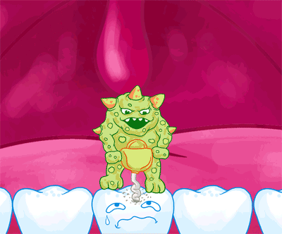
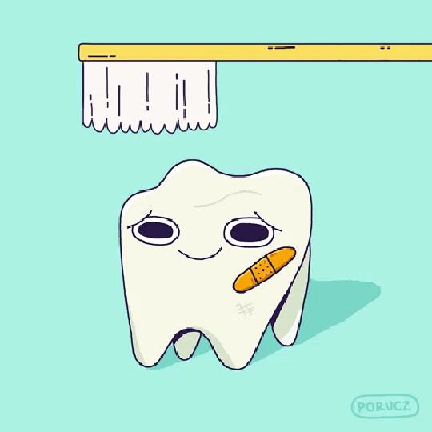
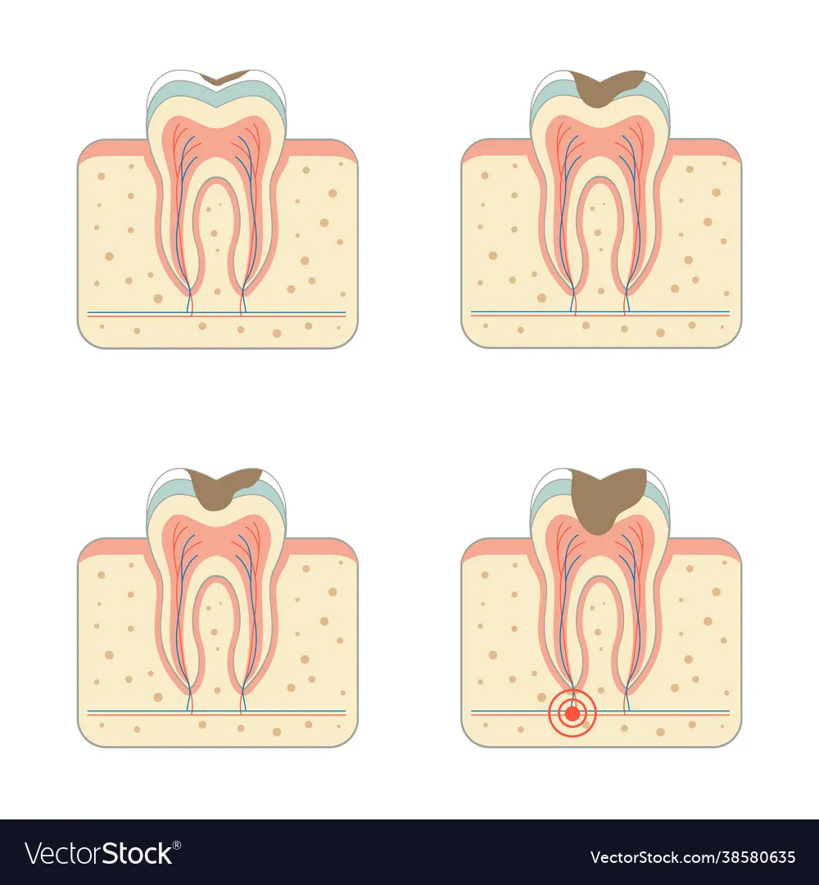
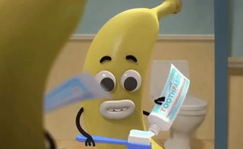

Гарна посмішка
це не тільки про зуби!
Здоров'я
Інфекція з ротової порожнини може потрапити в інші системи організму, підвищуючи ризик розвитку хронічних запальних процесів.
Серед них — запалення міокарду (міокардит), розвиток атеросклерозу, ускладнення перебігу цукрового діабету та навіть ревматоїдний артрит. Саме тому затягування лікування може мати незворотні наслідки для всього організму.
Карієс
На зубах утворюється не просто бруд, а біоплівка (зубний наліт). Це складна колонія бактерій, які приклеюються до емалі. Просте полоскання рота водою цю плівку не змиває, її треба здирати механічно (щіткою). Бактерії в цій плівці переробляють легкі вуглеводи (цукор, крохмаль з булочок/чіпсів). В результаті бродіння виділяються органічні кислоти (молочна, оцтова).
У роті є кислотно-лужний баланс. Норма — це нейтральне середовище (pH близько 7). Коли ми їмо солодке, pH падає. Якщо pH падає нижче 5.5 — починається демінералізація.
Емаль — це кристали гідроксиапатиту (дуже тверда структура). При кислотній атаці з цих кристалів починають вимиватися кальцій і фосфор.Уявімо цегляну стіну, з якої кислота вимиває цемент. Цеглини (кристали) починають сипатися. Структура стає пористою.
Але хороша новина в тому, що це не "гра в одні ворота". Атака: Кислота вимиває мінерали. Захист: Слина повертає мінерали назад (ремінералізація). Карієс виникає тоді, коли процес втрати мінералів йде швидше, ніж процес їх відновлення.
